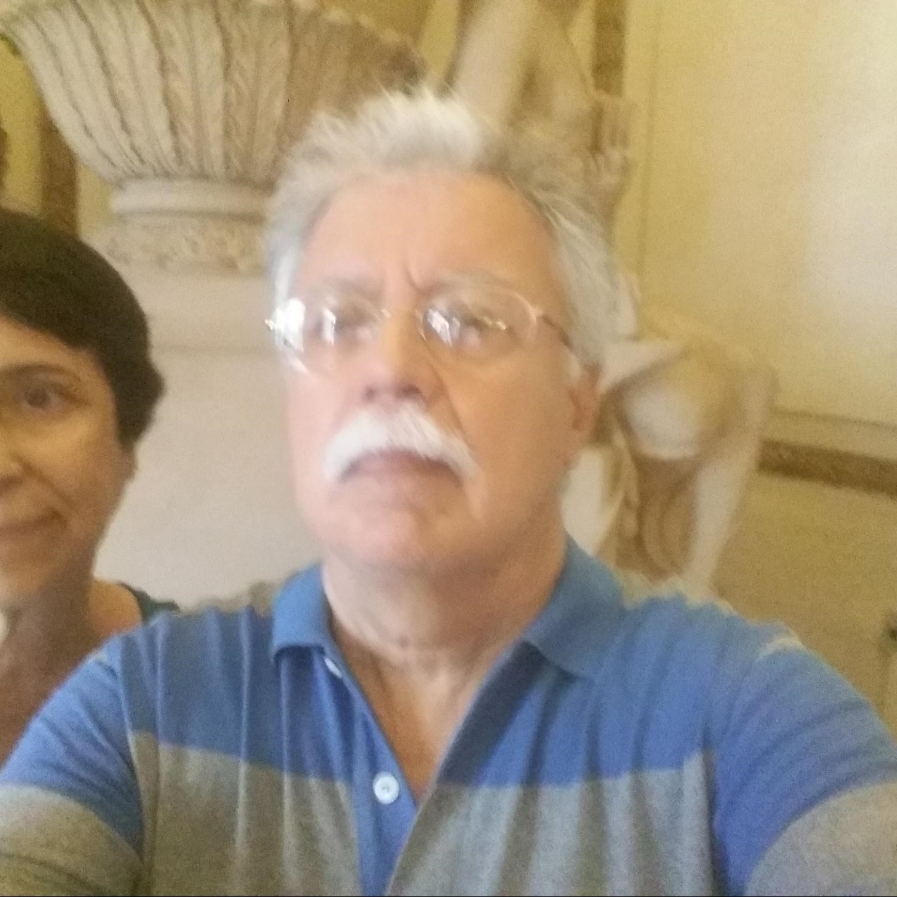
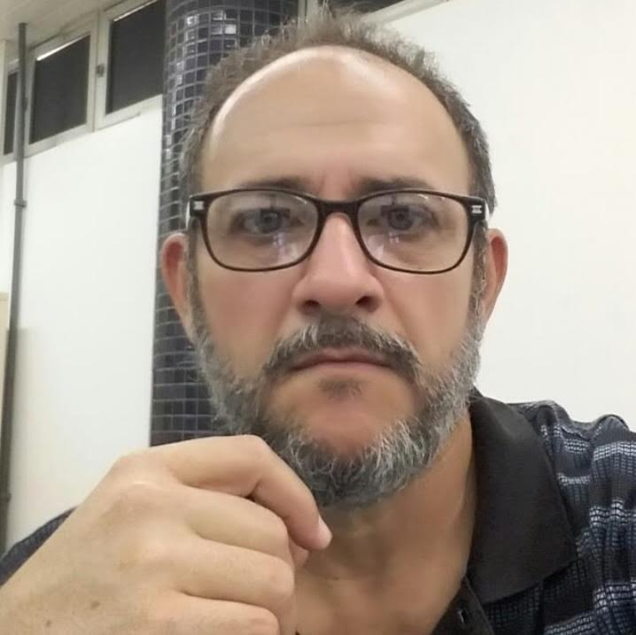
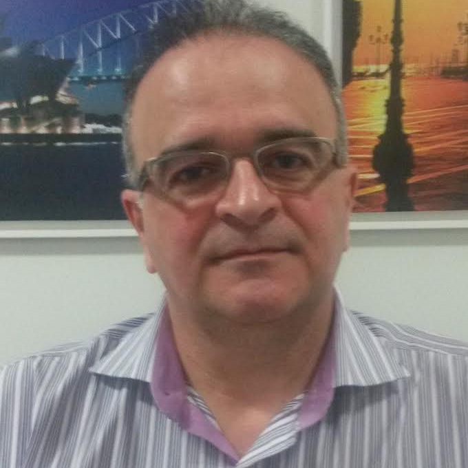
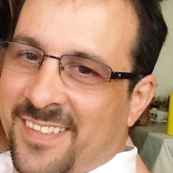
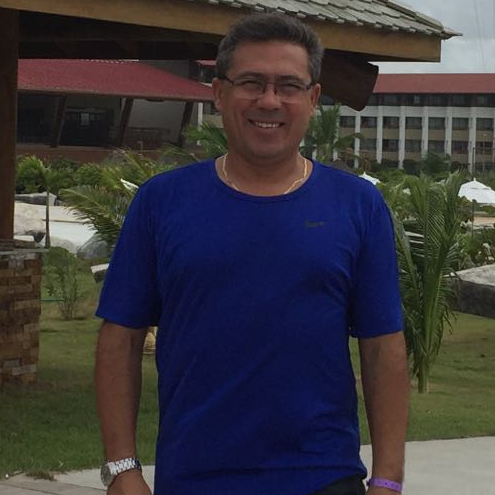
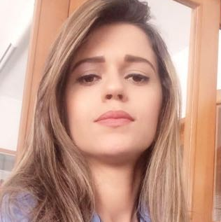
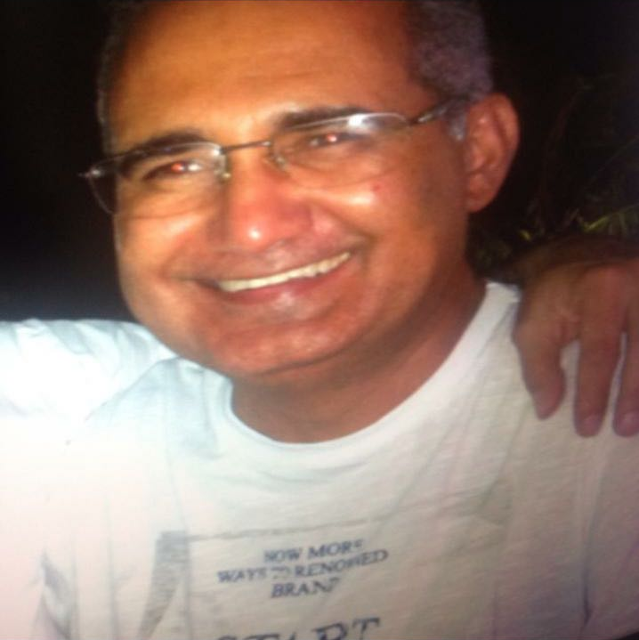
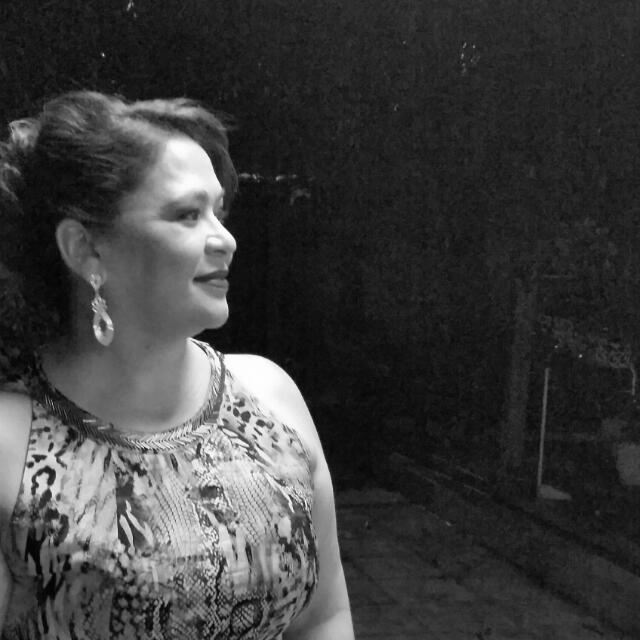

Gerando produtos, serviços e inovação com inteligência artificial
Lucas Lopes
Resumo
Nos últimos anos, a tecnologia tem sido aplicada nas mais diferentes áreas mudando completamente a forma que interagimos com o mundo. Presente em nossas vidas desde as atividades mais simples do nosso dia a dia até problemas extremamente complexos, o uso de Inteligência Artificial (IA) abre um novo mundo de possibilidades onde podemos encontrar produtos otimizados e serviços que antes não eram explorados, envolvidos com soluções inovadoras. Nesta palestra, incentivo-os a explorar o uso de IA para os mais diversos desafios.
Currículo
Bacharel em Ciência da Computação (CEUT) e Mestre em Ciência da Computação — com foco em Aprendizagem de Máquina (UFPI). Atua como pesquisador na empresa Infoway/Uniplam, lidando com problemas voltados para a área de saúde.
Informações
Data
19 de Maio de 2017
Local
Auditório Afonso Sena - SG03 - Centro de Ciências da Natureza (CCN) - Universidade Federal do Piauí (UFPI)
Programação
10:00
Arquitetando com o CESLA
10:20
Palestra "Gerando produtos, serviços e inovação com inteligência artificial"
11:10
Computando Minha História - Ricardo Dantas
11:40
Encerramento
Realização
Computando minha história
Venha conhecer a história de quem muito já fez pela computação

“Conheci Ricardo em 1990. Era um garoto desenvolvendo em clipper um programa para controle de custos. Hoje encontramos o Homem Ricardo executando múltiplas atividades com a mesma garra e dedicação daquele garoto. Ricardo é respeitado pelos profissionais de TI, pilotos e por todos que v&etilde;m nele um exemplo a ser seguido. Continue sempre assim de Homens como voc&etilde; é o que o Piauí e o Brasil precisam.”
Januário Pinheiro Ramos, Engenheiro
J
“Ricardo Augusto Dantas é um exemplo de profissional e de ser humano. Ele me ensina todos os dias a ter dedicação, responsabilidade e amor ao trabalho, além de sempre demonstrar seu carinho e cuidado pelas pessoas que o cercam. Agradeço a Deus e me orgulha muito ser sua filha e poder receber seus conselhos e partilhar sua sabedoria todos os dias.”
Jéssica Dantas, filha de Ricardo Dantas
“Ricardo é hoje, por sua intelig&etilde;ncia, capacidade técnica, obstinação e compet&etilde;ncia como empresário, um dos mais destacados representantes do setor da Tecnologia da Informação do nosso estado. Conheci esse amigo quando eu iniciava na vida empresarial, ele já empresário, sempre foi um grande incentivador e apoiador dos meus projetos. Ele representa os empresários sérios, consistente do ponto de vista técnico, e também por sua busca pela valorização da atividade de TI, perseguindo tenazmente o respeito ao segmento que é a base da sociedade moderna. Foram muitos os episódios onde seu caráter e generosidade ficaram evidentes. Sensível, é uma pessoa com caráter e princípios. Amigo leal, de quem tenho a honra e o prazer desta amizade.”
Miguel Oliveira Neto, Chief Executive Officer da Megavia e Via Personal

“Gente, falar do Ricardo Dantas é fácil pois nossa amizade já ultrapassa a barreira dos 30 anos, de sócios na Tecdata já são 26. é uma pessoa simples de posições fortes, muito inteligente que ama programação, mas tem uma Gama de conhecimentos das mais diversas áreas, que vão desde a programação até a aviação, passando pela economia que é sua graduação. é um profissional focado, não tem hora para o trabalho, sempre disposto a ajudar quem está ao seu lado. Ricardo está sempre buscando soluções para os diversos problemas de todos os clientes da Tecdata e em busca constante pelo conhecimento, inovação e tecnologia.”
Jorge Felix, Sócio Tecdata

“Estudamos no Colégio Diocesano e no curso de economia na UFPi. Já se vão 34 anos. Um amigo que sempre demonstrou habilidade em cálculos e com raciocínio lógico e veloz. Começou, ainda estudante universitário, uma empresa de informática em casa. Depois se instalou num imóvel próximo da sua resid&etilde;ncia, em sociedade com o amigo Jorge Felix. Pouco tempo depois, numa coragem que a mim não foi surpresa, instalou-se em sede próprio na Av. Jóquei Clube. São muitos anos dedicados ao setor de informática e tecnologia, destacando-se pelo setor desenvolvimento de software, o que faz com muita propriedade. Um profissional que cativa a todos, o que o torna amigo dos seus clientes. Um case admirável. Um ser humano incrível. UM VERDADEIRO AMIGO!!!”
Eldon Tajra Evangelista, Empresário de turismo e cãmbio

“Como irmão mais velho, tive como poucos, a grande oportunidade de acompanhar o desenvolvimento pessoal e profissional do Ricardo, o vi iniciar seu interesse por programação em um simplório e remoto TK-500, senão me falha a memória, seria este o nome da coisa, e daí construir todo um alicerce para empreender no ramo da informática, estando a frente de um dos pioneiros empreendimentos comerciais do ramo da informática em Teresina. Determinado como poucos sempre pronto a buscar e defender aquilo em que acredita meu querido e amado irmão "Ricardo Dantas" é um exemplo de empreendedor que sempre está contribuindo para a melhoria da nossa comunidade. Parabéns, felicidade e sucesso. é o que te desejo, meu irmão.”
Irmão de Ricardo
“Ricardo Dantas, economista de formação acad&etilde;mica, porém apaixonado pela tecnologia preferiu trilhar seu caminho como empresário na área da informática. Quando aluno do SENAC, um de seus trabalhos foi destaque a nível nacional, em entrevista a um canal de televisão local, que exaltava a façanha, mostrava o entusiasmo e a vibração de um jovem que mesmo com poucos recursos era capaz de desenvolver um programa para facilitar o trabalho do homem. Talvez este pr&etilde;mio tenha despertado o espírito empreendedor e juntamente com o amigo Jorge Félix realizou o sonho de fundar a Tecdata uma pequena empresa que com mais de duas décadas mostra seu enorme potencial. Ricardo Dantas meu irmão, tenho certeza que teu sobrenome é trabalho.”
Marco Aurélio, Advogado

“O Ricardo Dantas é uma refer&etilde;ncia de profissional na área de empreendedorismo por toda a sua dedicação, intelig&etilde;ncia e principalmente pela sua compet&etilde;ncia,além de um grande exemplo de ser humano. é um grande prazer falar de alguém com tantas qualidades engrandecedoras. Sou muito grato por ser seu compadre e pela sua amizade. Voc&etilde; é um exemplo a ser seguido, Ricardo! Parabéns pela sua lealdade para com o seu trabalho e por ser um amigo imprescindível para todos os momentos.”

“Ricardo Dantas começou como aluno de Economia e Engenharia Civil na Universidade Federal do Estado do Piauí- UFPI, ano de 1983, ainda durante a vida acad&etilde;mica como aluno da UFPI, Ricardo ingressou também como aluno do Senac, no curso Técnico na área de Informática, onde desenvolveu um programa/software para o Estado do Piauí, que foi eficiente e importante, solucionando o problema que a época afligia o Estado. E foi através de tamanha compet&etilde;ncia, dedicação e intelig&etilde;ncia, que foi indicado pelo Prof. Gildásio, para concorrer a um pr&etilde;mio a nível nacional na Cidade do Rio de Janeiro, onde galgou o mérito de ganhar o pr&etilde;mio e trazer essa conquista para o nosso estado, Piauí. Com isso, iniciou a sua vida na área de tecnologia da informação onde criou a Tecdata com o seu amigo e sócio/proprietário Jorge, isso tudo durante o período de sua vida acad&etilde;mica, ainda passou no concurso para o Banco do Estado do Piauí, antigo BEP. Também passou no concurso para Controlador de Voo, em Brasília, mais não quis assumir, devido aos cursos, pois queria concluir sua formação acad&etilde;mica . No entanto, a Tecdata cresceu e está no mercado até hoje, há mais de 25 anos, com muita compet&etilde;ncia e trabalho. Tive o prazer de está presente em uma das homenagens que Ricardo recebeu, como destaque na área de tecnologia, evento realizado pelo VI ERECOMPI, na sede da faculdade Ceut. Além disso, Ricardo tornou-se proprietário e sócio da empresa, onde até hoje trabalha com muita garra, disciplina,dedicação e amor pelo que faz. E após anos de experi&etilde;ncia na área de tecnologia, inovação, gestão e T.I. decidiu abraçar um sonho: "ser piloto de avião" e realizou, possui sua CPR (Certificado de Piloto Recreio). Onde hoje divide seu tempo, com a família, trabalho e seu hobby " voar". Meu eterno companheiro e esposo para todas as horas e em todos os lugares. Sem esquecer que é um ótimo pai, com muito amor por todos os filhos.”
Lilianna Basílio de Paiva e Silva, Advogada e Especialista em Direito Público e Privado

“Sou amigo do Ricardinho há mais de 30 anos desde a minha juventude, Ricardo sempre foi uma pessoa amiga e cordial como chamava-se 'gente boa' ou melhor uma pessoa do bem. Posteriormente, comecei a admirá-lo pelo seu lado profissional, fui um dos primeiros a adquirir seu software de gestão e sempre foi meu guru para assuntos de informática, Ricardo que Deus lhe conserve essa grande pessoa que voc&etilde; é. Abraços amigão.”
Laércio Seabra Netlux, Engenheiro Elétrico

“Conheço Ricardo há muitos anos. Nos acompanha desde a fundação da nossa Empresa. Não existe a frase"não tem como fazer " mas sim "há possibilidade", isso mostra o quanto ele é persistente em dar o melhor de si. Seu otimismo diante de um obstáculo nos estimula cada vez mais em continuar com a parceria. Em decorr&etilde;ncia disso agradeço pela dedicação, profissionalismo e prontidão , características essas sempre presentes em seu atendimento.”
Ednalva Cunha Costa de Oliveira, Administradora, Administradora-sócia da Empresa Rev Comércio e Representações Ltda
Curso de Introdução a Internet das Coisas (IoT) com Arduino e nodeMCU ESP8266
Duração
60 horas
Resumo
O curso de Introdução a Internet das Coisas (IoT) com Arduino e nodeMCU ESP8266 - irá habilitar o aluno a desenvolver produtos, equipamentos e hardwares microcontrolados que poderão monitorar, interagir e controlar ambientes ou sistemas inteiros. Tudo isto, utilizando apenas as plataformas de automação Arduino e nodeMCU ESP8266, lógica de programação e criatividade!
Com enfoque extremamente prático, no curso de Arduino, o aluno irá aprender fazendo! Será desenvolvido uma solução de automação via Web entre PHP, MySQL, Android, bluetooth, Arduino e nodeMCU ESP8266.
Ao final do curso, o aluno deverá apresentar um trabalho científico (Artigo ou TCC) como trabalho de conclusão. O mesmo, estará preparado para desenvolver sistemas microcontrolados que poderão interagir com ambientes remotos. Além disto, o conhecimento adquirido em sala de aula poderá ser utilizado para diversas outras soluções possíveis:
Automação residencial
Impressoras 3D
Robótica
Drones
Sistemas de controle
Internet das coisas (IoT)
Domótica
Eletrônica e automação
Interpretar sensores integrados ao Arduino/nodeMCU ESP8266
Trabalho com sensores analógicos e digitais, microcontroladores e microprocessadores
Enviar, receber e monitorar o Arduino/nodeMCU ESP8266 remotamente
Aprender a prototipar com Arduino/nodeMCU ESP8266
Desenvolver uma solução de automação via Web entre PHP, MySQL, Android e Arduino/nodeMCU ESP8266
Protocolos de Rede em IoT
Armazenamento de dados e análise
Geolocalização
Segurança na Internet das Coisas
Interface homem-computador e o mundo da Internet das Coisas


Computando minha história
Venha conhecer a história de quem muito já fez pela computação“Conheci Ricardo em 1990. Era um garoto desenvolvendo em clipper um programa para controle de custos. Hoje encontramos o Homem Ricardo executando múltiplas atividades com a mesma garra e dedicação daquele garoto. Ricardo é respeitado pelos profissionais de TI, pilotos e por todos que v&etilde;m nele um exemplo a ser seguido. Continue sempre assim de Homens como voc&etilde; é o que o Piauí e o Brasil precisam.”
Januário Pinheiro Ramos, Engenheiro“Ricardo Augusto Dantas é um exemplo de profissional e de ser humano. Ele me ensina todos os dias a ter dedicação, responsabilidade e amor ao trabalho, além de sempre demonstrar seu carinho e cuidado pelas pessoas que o cercam. Agradeço a Deus e me orgulha muito ser sua filha e poder receber seus conselhos e partilhar sua sabedoria todos os dias.”
Jéssica Dantas, filha de Ricardo Dantas“Ricardo é hoje, por sua intelig&etilde;ncia, capacidade técnica, obstinação e compet&etilde;ncia como empresário, um dos mais destacados representantes do setor da Tecnologia da Informação do nosso estado. Conheci esse amigo quando eu iniciava na vida empresarial, ele já empresário, sempre foi um grande incentivador e apoiador dos meus projetos. Ele representa os empresários sérios, consistente do ponto de vista técnico, e também por sua busca pela valorização da atividade de TI, perseguindo tenazmente o respeito ao segmento que é a base da sociedade moderna. Foram muitos os episódios onde seu caráter e generosidade ficaram evidentes. Sensível, é uma pessoa com caráter e princípios. Amigo leal, de quem tenho a honra e o prazer desta amizade.”
Miguel Oliveira Neto, Chief Executive Officer da Megavia e Via Personal“Gente, falar do Ricardo Dantas é fácil pois nossa amizade já ultrapassa a barreira dos 30 anos, de sócios na Tecdata já são 26. é uma pessoa simples de posições fortes, muito inteligente que ama programação, mas tem uma Gama de conhecimentos das mais diversas áreas, que vão desde a programação até a aviação, passando pela economia que é sua graduação. é um profissional focado, não tem hora para o trabalho, sempre disposto a ajudar quem está ao seu lado. Ricardo está sempre buscando soluções para os diversos problemas de todos os clientes da Tecdata e em busca constante pelo conhecimento, inovação e tecnologia.”
Jorge Felix, Sócio Tecdata“Estudamos no Colégio Diocesano e no curso de economia na UFPi. Já se vão 34 anos. Um amigo que sempre demonstrou habilidade em cálculos e com raciocínio lógico e veloz. Começou, ainda estudante universitário, uma empresa de informática em casa. Depois se instalou num imóvel próximo da sua resid&etilde;ncia, em sociedade com o amigo Jorge Felix. Pouco tempo depois, numa coragem que a mim não foi surpresa, instalou-se em sede próprio na Av. Jóquei Clube. São muitos anos dedicados ao setor de informática e tecnologia, destacando-se pelo setor desenvolvimento de software, o que faz com muita propriedade. Um profissional que cativa a todos, o que o torna amigo dos seus clientes. Um case admirável. Um ser humano incrível. UM VERDADEIRO AMIGO!!!”
Eldon Tajra Evangelista, Empresário de turismo e cãmbio“Como irmão mais velho, tive como poucos, a grande oportunidade de acompanhar o desenvolvimento pessoal e profissional do Ricardo, o vi iniciar seu interesse por programação em um simplório e remoto TK-500, senão me falha a memória, seria este o nome da coisa, e daí construir todo um alicerce para empreender no ramo da informática, estando a frente de um dos pioneiros empreendimentos comerciais do ramo da informática em Teresina. Determinado como poucos sempre pronto a buscar e defender aquilo em que acredita meu querido e amado irmão "Ricardo Dantas" é um exemplo de empreendedor que sempre está contribuindo para a melhoria da nossa comunidade. Parabéns, felicidade e sucesso. é o que te desejo, meu irmão.”
Irmão de Ricardo“Ricardo Dantas, economista de formação acad&etilde;mica, porém apaixonado pela tecnologia preferiu trilhar seu caminho como empresário na área da informática. Quando aluno do SENAC, um de seus trabalhos foi destaque a nível nacional, em entrevista a um canal de televisão local, que exaltava a façanha, mostrava o entusiasmo e a vibração de um jovem que mesmo com poucos recursos era capaz de desenvolver um programa para facilitar o trabalho do homem. Talvez este pr&etilde;mio tenha despertado o espírito empreendedor e juntamente com o amigo Jorge Félix realizou o sonho de fundar a Tecdata uma pequena empresa que com mais de duas décadas mostra seu enorme potencial. Ricardo Dantas meu irmão, tenho certeza que teu sobrenome é trabalho.”
Marco Aurélio, Advogado“O Ricardo Dantas é uma refer&etilde;ncia de profissional na área de empreendedorismo por toda a sua dedicação, intelig&etilde;ncia e principalmente pela sua compet&etilde;ncia,além de um grande exemplo de ser humano. é um grande prazer falar de alguém com tantas qualidades engrandecedoras. Sou muito grato por ser seu compadre e pela sua amizade. Voc&etilde; é um exemplo a ser seguido, Ricardo! Parabéns pela sua lealdade para com o seu trabalho e por ser um amigo imprescindível para todos os momentos.”
“Ricardo Dantas começou como aluno de Economia e Engenharia Civil na Universidade Federal do Estado do Piauí- UFPI, ano de 1983, ainda durante a vida acad&etilde;mica como aluno da UFPI, Ricardo ingressou também como aluno do Senac, no curso Técnico na área de Informática, onde desenvolveu um programa/software para o Estado do Piauí, que foi eficiente e importante, solucionando o problema que a época afligia o Estado. E foi através de tamanha compet&etilde;ncia, dedicação e intelig&etilde;ncia, que foi indicado pelo Prof. Gildásio, para concorrer a um pr&etilde;mio a nível nacional na Cidade do Rio de Janeiro, onde galgou o mérito de ganhar o pr&etilde;mio e trazer essa conquista para o nosso estado, Piauí. Com isso, iniciou a sua vida na área de tecnologia da informação onde criou a Tecdata com o seu amigo e sócio/proprietário Jorge, isso tudo durante o período de sua vida acad&etilde;mica, ainda passou no concurso para o Banco do Estado do Piauí, antigo BEP. Também passou no concurso para Controlador de Voo, em Brasília, mais não quis assumir, devido aos cursos, pois queria concluir sua formação acad&etilde;mica . No entanto, a Tecdata cresceu e está no mercado até hoje, há mais de 25 anos, com muita compet&etilde;ncia e trabalho. Tive o prazer de está presente em uma das homenagens que Ricardo recebeu, como destaque na área de tecnologia, evento realizado pelo VI ERECOMPI, na sede da faculdade Ceut. Além disso, Ricardo tornou-se proprietário e sócio da empresa, onde até hoje trabalha com muita garra, disciplina,dedicação e amor pelo que faz. E após anos de experi&etilde;ncia na área de tecnologia, inovação, gestão e T.I. decidiu abraçar um sonho: "ser piloto de avião" e realizou, possui sua CPR (Certificado de Piloto Recreio). Onde hoje divide seu tempo, com a família, trabalho e seu hobby " voar". Meu eterno companheiro e esposo para todas as horas e em todos os lugares. Sem esquecer que é um ótimo pai, com muito amor por todos os filhos.”
Lilianna Basílio de Paiva e Silva, Advogada e Especialista em Direito Público e Privado“Sou amigo do Ricardinho há mais de 30 anos desde a minha juventude, Ricardo sempre foi uma pessoa amiga e cordial como chamava-se 'gente boa' ou melhor uma pessoa do bem. Posteriormente, comecei a admirá-lo pelo seu lado profissional, fui um dos primeiros a adquirir seu software de gestão e sempre foi meu guru para assuntos de informática, Ricardo que Deus lhe conserve essa grande pessoa que voc&etilde; é. Abraços amigão.”
Laércio Seabra Netlux, Engenheiro Elétrico“Conheço Ricardo há muitos anos. Nos acompanha desde a fundação da nossa Empresa. Não existe a frase"não tem como fazer " mas sim "há possibilidade", isso mostra o quanto ele é persistente em dar o melhor de si. Seu otimismo diante de um obstáculo nos estimula cada vez mais em continuar com a parceria. Em decorr&etilde;ncia disso agradeço pela dedicação, profissionalismo e prontidão , características essas sempre presentes em seu atendimento.”
Ednalva Cunha Costa de Oliveira, Administradora, Administradora-sócia da Empresa Rev Comércio e Representações Ltda